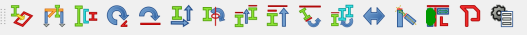

Introduction
Quetzal is a FreeCAD workbench for designing piping systems. It is a fork of the Dodo and Flamingo workbenches which were initially designed for structural framing and piping design.
Interfaces
The user interface consists of three toolbars and menus:
Pipe Tools
Pipe tools toolbar
- Insert Pipe - Loads the Insert Pipes form to insert a section of pipe of a selected schedule, nominal diameter, and length.
- Insert Elbow - Loads the Insert Elbow form to insert an elbow of a selected schedule/rating and nominal diameter. Optional input boxes allow overriding of the default bend angle and bend radius for butt welded fittings. A rotation dial allows the fitting to be rotated after insertion.
- Insert Tee - Loads the Insert Tee form to insert a tee fitting of a selected schedule/rating, main run nominal diameter, and branch nominal diameter. Radio buttons allow the fitting to be inserted on either the run (straight section) or branch of the tee.
- Insert Cap - Loads the Insert Cap form to insert a cap of a selected schedule/rating and nominal diameter.
- Insert Coupling/Union - Loads the Insert Coupling/Union form to insert a socket welded or threaded coupling or union fitting of a selected rating. Couplings may have different nominal diameters at each end.
- Insert Valve - Loads the Insert Valve form to insert a valve. Three types are currently supported - Flanged (which is rendered as a trunnion-style ball valve and can be rendered with a handle or gearbox), Threaded/Socket welded (rendered as a typical hex body handled valve) and Generic, which is rendered with a double cone shape typical of process flow diagrams.
- Insert Flange - Loads the Insert Flange form to insert a flange of a selected size. For weld neck flanges, the bore schedule can also be selected. Radio buttons allow the valve to be inserted either on its weld end or flange face end (for attaching to another flange).
- Insert Gasket/Flange Bolts- Loads the Insert Gaskets form to insert gaskets and corresponding flange bolts of a selected pressure class and size.
- Insert Outlet - Inserts a threaded/socket welded or butt welded outlet fitting of a selected size and schedule/rating. Fittings can be inserted at 90 degrees or at 45 degrees with respect to the carrier pipe or fitting, and can be rotated around and moved along the axial length of pipe to be inserted at any point on a selected pipe.
- Insert U-bolt - Inserts a U-bolt to clamp a pipe to a pipe support. The nominal diameter of pipe can be selected.
- PypeLine Manager - Loads the PypeLine Manager form that allows the insertion of pipe segments following a draft wire path. Bends are inserted as short radius (1D bend radius) butt weld elbows
- Insert Branch - Loads the Insert a Branch form which inserts pipe branches (modeled as fishmouth-cut pipe attachments to a carrier pipe). The branch path follows a draft wire path.
- Insert a Tank - Inserts a tank, modeled as a rectangular box with specified dimensions.
- Insert a Terminal Adapter - inserts a terminal adapter (such as a PVC thread-socket adapter) of selected size and rating.
- Insert a Pipe Route - (need to fix)
- Break the Pipe - Break a pipe component into two segments with an optional gap between segments.
- Mate pipe edges - Click two component edges to align centers. The first object clicked is stationary and the second object moves.
- Fit One Elbow - Select two intersecting pipes and one elbow to fit the elbow between the two pipes. Only works with pype-objects.
- Extend the pipe - By selecting two pipes, this command extend them both to their intersection point, if exists.
- Extend the pipes - By selecting two pipes, this command extend the first to the intersection with the other, if exists.
- Connect to Header
- Lay Down the Pipe - With one pipe and one beam object selected, moves the selected pipe to match the face of a beam object
- Raise Up the Support - Similar to the Lay Down the Pipe tool, except moves the beam with a stationary pipe object.
- Draw Tube Point by Point - Combines drafting a pipe path with the Pypeline Manager interface in one step
- Insert Any Shape - This is a tool to create a "pype" object from a .STEP or .IGES or .BREP file. It loads the imported file into the Shape property of a FeaturePython. Shape files should be added to the "shapez" folder in the Quetzal workbench directory.
Frame Tools

Frame Tools toolbar
Utilities
Utilities toolbar
Links
{kind=link}
{kind=link}
{kind=link}